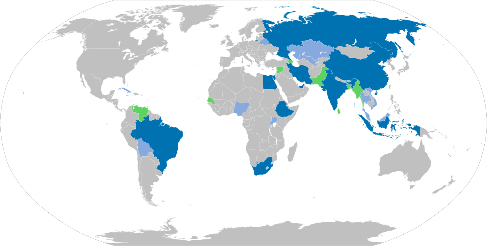

Hormuz tanker fire reclassified as an attack
UKMTO has changed incident 199-26 from suspicious activity to attack. The same incident involved a tanker fire and crew evacuation near Khasab, Oman.
UKMTO has changed incident 199-26 from suspicious activity to attack. The same incident involved a tanker fire and crew evacuation near Khasab, Oman.
Saudi authorities reported a limited fire after the East–West pipeline was targeted in Medina. They reported no casualties or interruption to pipeline operations.
The Suez Canal Authority reported EVER EON’s transit. It is a concrete routing milestone, while broader service plans and Red Sea security require separate verification.
The authority has added one daily Panamax booking slot and raised Neopanamax draft to 50 feet. The change improves access and loading flexibility on a route important to Chinese trade.
The Charlemagne Brief gathers, verifies, and consolidates consequential global developments. We follow military pressure, diplomacy, energy, trade corridors, and geopolitical realignment—documenting what happened, explaining why it matters, and distinguishing evidence from interpretation.

A source-led briefing index for developments that move the news cycle or may influence geopolitics. Explore the existing BRICS+ map, published reports, and editorial standards.
The dossier explains who Charlemagne is meant to be, how the voice works, and why the project treats prophecy as part of a long-range analytical framework rather than a substitute for reporting.
Published 9 November 2026. Task Force Iron Gate shifts attention toward Iran’s land borders and Caspian routes. The announcement is confirmed; operational results remain unproven.